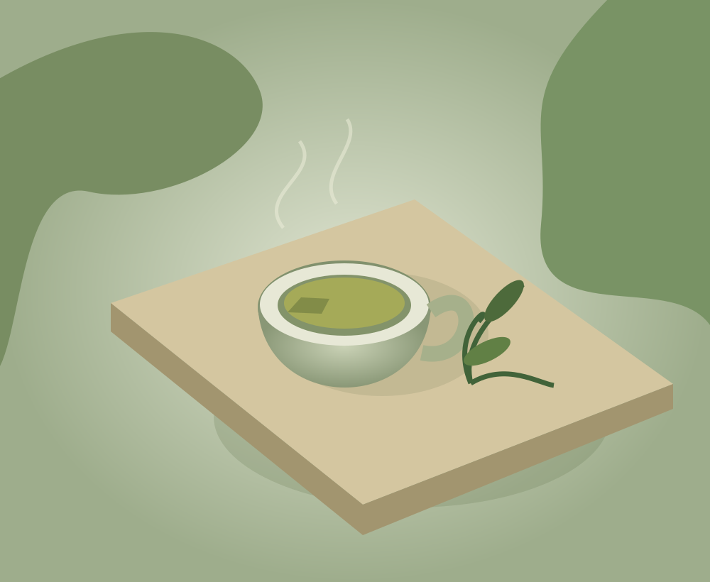
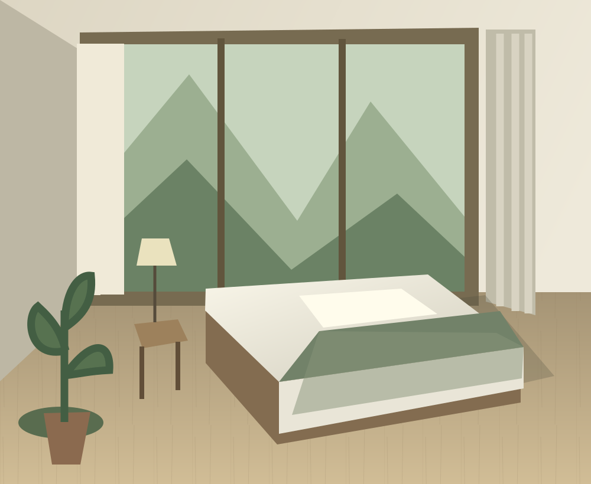
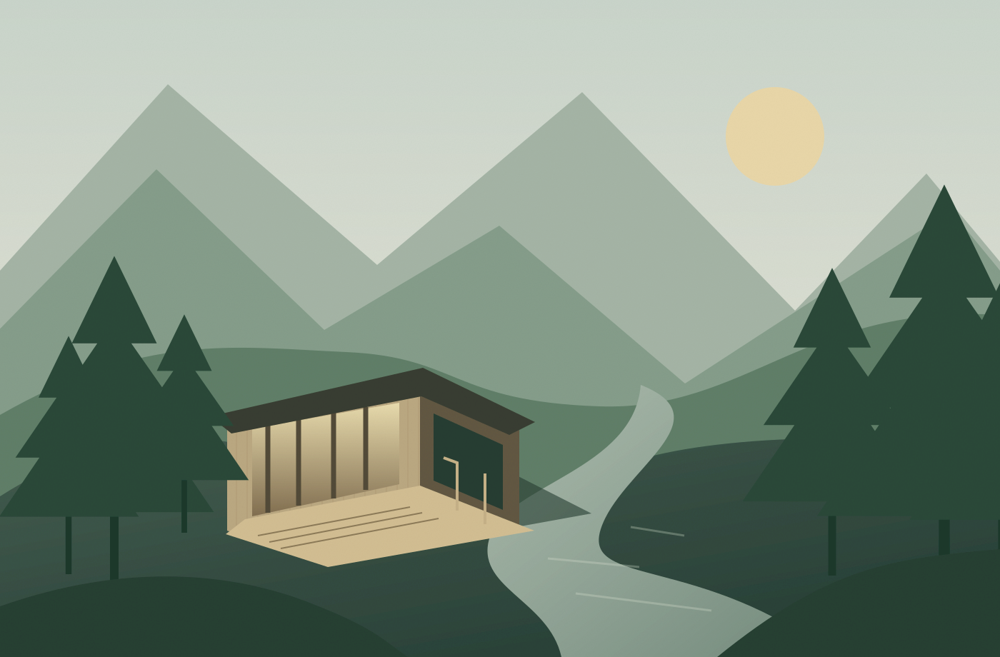

01 / 一日在山里 · 6 MIN READ
把早晨，
还给一杯茶。
不必急着查看消息。把水烧开，看茶叶在杯中一点一点舒展，听窗外的风从树梢经过。你会发现，安静并不意味着什么都没有发生。
我们习惯用一杯淡茶开始一天。早餐后沿着溪水走一小段，午后读几页书。行程可以很简单，感受却比想象中丰盛。
找一间能喝茶的房间FIELD NOTES / 山间手记
关于山居、四季，以及那些值得慢慢做的小事。

01 / 一日在山里 · 6 MIN READ
不必急着查看消息。把水烧开，看茶叶在杯中一点一点舒展，听窗外的风从树梢经过。你会发现，安静并不意味着什么都没有发生。
我们习惯用一杯淡茶开始一天。早餐后沿着溪水走一小段，午后读几页书。行程可以很简单，感受却比想象中丰盛。
找一间能喝茶的房间02 / 建筑与自然

设计房间时，我们先看向窗外。木头的色泽、墙面的肌理、灯光落下的位置，都为自然留出空间。家具安静一些，山色就能成为主角。
03 / 徒步与观察

最好的路线，未必通向一个目的地。沿溪边小径散步，观察石头上的苔藓，听见不同鸟鸣，适时停下来。出发前请留意天气，不独自进入未开放的山道。